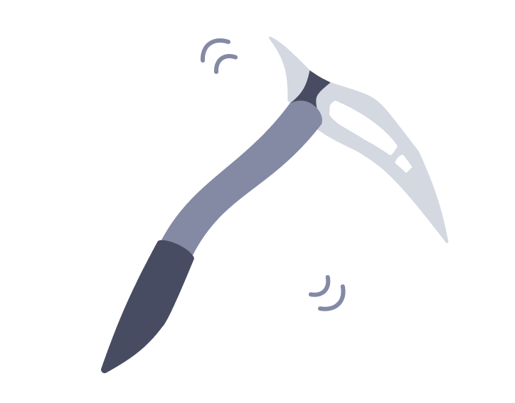
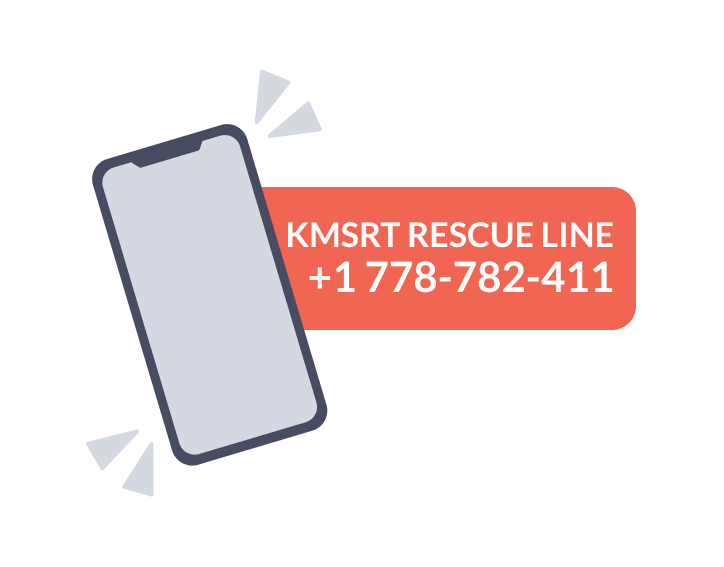

If Caught:
In most avalanche situations, any defensive action is very difficult. Movement relative to the debris is often impossible. However, some of the following may be useful:
- If you have an ice axe, try plunging it into the undersurface. This may help to keep you near the top of the slide.
- Shout. Others may see you.
- Try to run to the side, or jump up-slope above the fracture.
- Get rid of gear; sacks, skis etc.
- Try to roll like a log, off the debris.
- Swimming motions sometimes help.
- As the avalanche slows down, you may be able to get some purchase on the debris. Make a desperate effort to get to the surface, or at least get a hand through.

Avalanche Rescue:
Observe the victim's progress and if possible mark the point of entry and point at which last seen, and check for further avalanche danger.
Make a quick search of the debris surface:
- LOOK for any signs of victims.
- LISTEN for any sounds.
- PROBE the most likely burial spots.
- Make a SYSTEMATIC SEARCH, probing the debris with axes or poles.
- Send for help, but KEEP SEARCHING until help arrives.
Remember that you are the buried victim's only real chance of live rescue. Although survival chances decline rapidly with the duration of burial, they do not reach zero for a long time.